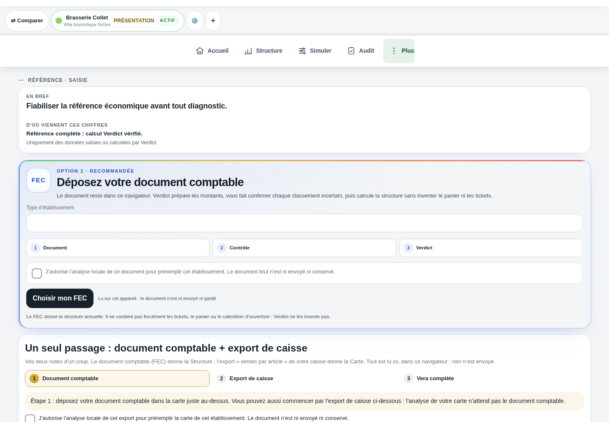

Pilotage
Une saisie par journée ou plusieurs services, selon votre choix. Comparez ventes, minimum qui couvre les charges renseignées et objectif de résultat. Les projections restent distinctes du réalisé.
Votre espace Verdict
Choisissez un outil capable de relier vos données à une décision vérifiable. Demandez-lui d’expliquer un résultat, ses hypothèses et ce qui manque. Avec Verdict, vous pouvez découvrir la structure, la carte et l’inventaire dans une démonstration, puis commencer avec votre fichier comptable. Les trois modules vous aident à passer de la vue d’ensemble au détail.
La méthode Verdict · lecture économique · 18 septembre 2026
Si vous cherchez à encaisser, la question concerne une caisse. Pour organiser des horaires, elle concerne un planning. Pour comprendre ce qui reste après les charges, le chiffre minimum ou la contribution des plats, elle relève du pilotage économique. Ces fonctions peuvent se compléter sans se remplacer.
Ouvrez une brasserie fictive. Retrouvez la période, le résultat de structure et les postes inclus. Passez ensuite à la carte, puis examinez un écart matière. Demandez où manque une donnée et comment une nouvelle hypothèse change la lecture. Un écran séduisant ne suffit pas si vous ne pouvez pas expliquer son chiffre.
Le parcours FEC prépare les écritures et les classements à relire. Les exports permettent de conserver une lecture ou de la transmettre. Un import ne certifie pas la comptabilité et ne prouve pas une connexion bancaire ou caisse.
Guides, calculs locaux et démonstration sont ouverts. Les abonnements, comptes commerciaux et communications attendent leurs validations de lancement. Le détail des tarifs distingue clairement l’offre prévue de ce qui peut être utilisé maintenant.
DANS L’APPLICATION VERDICT

Entrée du document comptable FEC dans la démonstration fictive Brasserie Collet : analyse locale annoncée et contrôle des classements ; aucun document réel importé.
Voir l’écran en grandDéposez votre document comptable
Document · Contrôle · Verdict
Choisir mon FEC
Aucun document réel n’est importé dans cette démonstration ; la capture montre le parcours, pas une importation réalisée.
Version actuelle · trois modules
Une saisie par journée ou plusieurs services, selon votre choix. Comparez ventes, minimum qui couvre les charges renseignées et objectif de résultat. Les projections restent distinctes du réalisé.
Reliez ingrédients, portions, prix et ventes pour lire la contribution des plats. Le manque à gagner de la carte garde le même périmètre dans Carte et Pilotage.
Produits, fournisseurs, achats, réceptions, comptages et commandes au colis. La consommation mesurée permet de vérifier le théorique ; sans inventaire, ses limites restent visibles.
Import FEC, saisie et fichiers de ventes disponibles localement. Import de factures structurées avec validation. Les connexions automatiques de caisse et Iopole sont préparées, sans être actives sur cet accès public.
Vos saisies restent dans ce navigateur et s’exportent. La synchronisation de comptes n’est pas activée sur cette présentation.